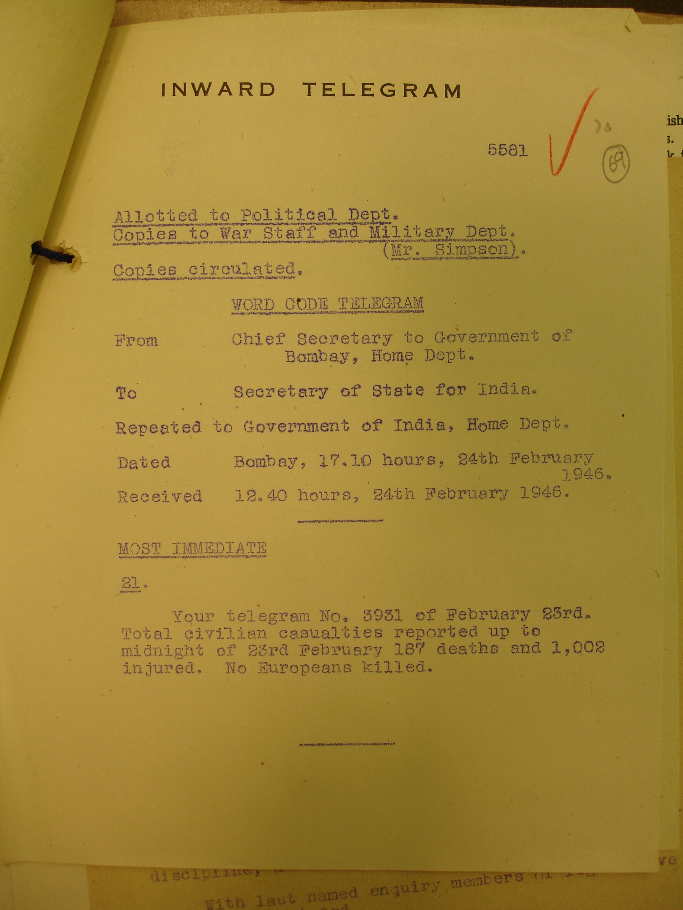

August 17, 1945 Jakarta
Sukarno declares Indonesian independence. The period ended with the departure of the British military in 1946, by which time the Dutch had rebuilt their military capacity. Meanwhile, the Indonesian revolutionary fighters are well into the process of forming a formal military. Bersiap: a violent and chaotic phase of the Indonesian National Revolution following the end of World War II. The Indonesian word bersiap means 'get ready' or 'be prepared', and the period lasts from August 1945 to December 1946. The last Japanese troops are evacuated by July 1946.
October 27, 1945 Surabaya
The Battle of Surabaya begins. Fought between pro-independence Indonesian soldiers and militia against British Indian troops as a part of the Indonesian National Revolution. The peak of the battle was in November 1945, the heaviest single battle of the revolution, later a national symbol of Indonesian resistance.
February 19, 1946 Whitehall, London 2230
From Secretary of State: Most Immediate: Press carries sensational reports...
{kind=link}
February 20, 1946 Aden 1130
Twenty RIN Ratings - off watch - refused to carry out watch-keeping duties.
February 20, 1946 Bahrain 1200
Bahrain Wireless Transfer Station: Ratings refuse duty and are placed under arrest.
February 20, 1946 2320
From Govt of India, War Dept to Secretary of State
{kind=link}
February 21, 1946 New Delhi 2320
From Government of India, War Department
{kind=link}
February 21, 1946 Parliament, London 1610
Prime Minister was pressed in the House of Commons...'

February 21, 1946 Whitehall, London 1525
Frome Minister to Viceroy
{kind=link}
February 21, 1046 Whitehall, London 1405
From Secretary of State to Viceroy
{kind=link}
February 22, 1946 Bombay 0030
From Governor of Bombay to Secretary of State for India
{kind=link}
February 22, 1946 Whitehall, London 1315
From 10 Downing Street
{kind=link}
February 22, 1946 Whitehall, London 0100
We all hope that wiser counsels prevail'.
February 22, 1946 Secretariat, Bombay 2245
From Secretary to the Governor of Bombay, to Secretary of State for India
{kind=link}
February 24, 1946 1710
From Chief Secretary to Govt of Bombay, to Secretary of State
{kind=link}
February 24, 1946 1340
From Secretary to Governor of Bombay to Secretary of State for India
{kind=link}
February 28, 1946 Seretariat, Madras 1900
From Chief Secretary, Government of Madras to Secretary of State, Govt of India, 'general strike and hartal in Madras city'
{kind=link}
About the Map
This map is created for the Insurrection 1946 exhibition by Saman Goudarzi and Sumandro Chattapadhyay at the Centre for Internet and Society (CIS), India, with the support of Sanjay Bhangar and Shekhar Krishnan. Research: Valentina Vitali, Ashish Rajadhyaksha, Shekhar Krishnan. Materials: grateful acknowledgment to British Library (London), University of Cambridge South Asia Studies and Churchill College (Cambridge), Centre for Studies in Social Sciences (Kolkata), Nehru Memorial Museum & Library (Delhi), and the private collection of T.R. Srinivasan and N. Sanjeeva Rao, IPS (Mumbai). Developed using Mapbox, MapWarper, and Lightbox. Icons courtesy the Noun project.